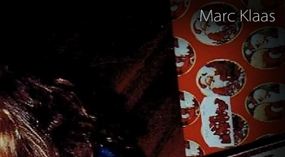
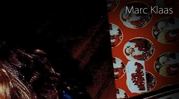

Ten Years Old
A then ten year old Princess Estelle of Sweden at the 45th birthday celebration of her mother, Crown Princess Victoria. The birthday celebration was held at Borgholm Castle Ruin in Sweden on 14 July 2022. Princess Estelle turned thirteen years old on 23 February 2025. Princess Estelle is the daughter of Princess Victoria and Prince Daniel of Sweden and the granddaughter of King Carl XVI and Queen Silvia of Sweden. Princess Estelle is second in line to the Swedish Throne after her mother, Princess Victoria. See two other official birthday portraits and read more about it on Tatler and New My Royals.
This Means War
December 29th 2024
In the event that I am ever arrested again for the murder of JonBenet Ramsey, I am prepared to defend myself. My legal defense is not a recantation nor is it an admission of a lie. It is my right to legally defend myself, whether I am guilty or not guilty.
I will fight extradition back to America in any country I might be arrested in by U.S. authorities. Furthermore, I will make efforts to communicate with authorities in the country that I am arrested in, to consider granting me asylum based on legal persecution by U.S. authorities and based on the threat to my life and safety by certain people in the public in the United States.
I will invoke my 5th Amendment U.S. Constitutional right that grants me protection against self-incrimination. I will invoke this right for any and all questions posed to me in any legal procedure, whether an interrogation, a forced deposition, or otherwise. I will be represented by an attorney at all times possible in the presence of law enforcement.
I will not cooperate with any forensic testing that law enforcement might request or demand of me. I will fight any efforts to harvest a DNA sample. I will refer the courts to the sample taken in 2006, by Boulder Deputy District Attorney Tom Bennett, in a small and confined private jet, parked on an airport tarmac, wherein I was handed swabs to conduct the test on myself. The likelihood of contamination in such a confined environment was high but that is not my problem. If I am legally required to submit to any type of forensic testing, demanded by law enforcement, I will fight their demands in court.
If I am charged with any crime related to the murder of JonBenet Ramsey, once in an American court, I will plead 'not guilty' to all charges brought against me. At that point, I will be prepared to fight all charges against me with the best attorneys I can acquire.
I am not the same person you arrested in 2006. I am not the weak, transgender, pedophile, freak, faggot all of you thought I was when you saw me on television in 2006. I am not the meek, soft spoken, repentant, caring and cooperative school teacher I was in 2006 that all of you laughed at while you called me a delusional liar. I am filled with bitterness, boiling with intense anger, and consumed with the desire for vengeance against my enemies.
In 2006, you arrested me and put me through hell only to release me and brand me a delusional liar. You publicly humiliated me. You bullied me because you saw me as weak. Today, I am not only stronger, I am vicious. My hate for you is the most powerful and intense emotion I have left in me.
I do not care about your desire for justice. I will do everything legally possible to end your quest. I do not care about closure for the family of the victim. I care only about defending myself in every way possible. This means war. (December 29th 2024) Share 

The Georgia Connection
December 6th 2024
On October 4th 2023, News Nation's Ashleigh Banfield released a statement on her television broadcast from the father of JonBenet Ramsey. In it, John Ramsey stated he had "pretty strong evidence" that I had stalked his family well before his daughter was murdered.
Recently, I was told that Mr Ramsey revealed at least a portion of that "pretty strong evidence". It was an old news story released after my 2006 arrest. The Ramseys' housekeeper, at their Charlevoix Michigan vacation home, came forward and said she had caught someone rummaging through the Ramseys' vacation home garage, sometime prior to the death of JonBenet Ramsey, who fit the physical description of the man she was seeing all over the news. If anyone in law enforcement had been interested in the housekeeper's eyewitness account in 2006, they would've taken action and they certainly did not.
It must be asked, how would I know the Ramseys had a vacation home in Charlevoix? I was not a local. Looks like Charlevoix is an end without a beginning and a middle. Singling out Charlevoix with no logical order leading up to the stalking event is a mistake. It's missing the critical sequence of events that would lead up to me even knowing the vacation home in Charlevoix existed or that it belonged to the Ramseys who had a little girl I might be interested in stalking. This missing information would be devastating in a trial, if it ever comes to that. No one falls out of the clear blue sky and lands in the Ramseys' Charlevoix Michigan vacation home garage.
In and around 2006, whenever I was asked how I knew or met JonBenet Ramsey, by the authorities or the media, I declined to reveal my connection to her. Knowing her and accessing her would have required an adult liaison. Otherwise, knowing her would have required some situation that her and I were mutually involved in. As an example of a mutual situation, teachers know their students because of a situation that places them all in a classroom. In that case, no adult liaison is needed.
Then there is this accusation of stalking. In that scenario, no adult liaison nor a mutual situation would be required. However, such a strong accusation still requires evidence of how I knew my victim to begin with. I suppose Mr Ramsey feels that the connection to his daughter has been proven in Charlevoix Michigan by his housekeeper; however, it might be noted that Georgia was my state and his daughter's state and a place I frequented and lived in multiple times for all the years I have resided in the United States. Georgia could have led up to Charlevoix for me but not in reverse order.
If I knew JonBenet Ramsey, our initial connection would have taken place in Georgia where her and I were born and where we had both lived. I've lived in and frequented Atlanta for a lifetime. My father and brothers lived there. I had lived in Atlanta for years on end, alone in one of my dad's houses, during the time the Ramseys lived only a few miles from me. My twin daughters were to be born in January 1990 at Northside Hospital in Atlanta which was the same hospital JonBenet Ramsey was born in the same year. Even after the Ramseys moved away from Atlanta to Colorado, Patsy Ramsey frequently returned to Roswell Georgia with her children to visit her parents.
Am I discounting the housekeeper's eyewitness account that she saw me rummaging through the garage in Charlevoix? Not at all. Eyewitness accounts are powerful, but they can also be dismantled in a court of law by a good attorney, which I intend to have if this ever goes to trial. Since the authorities have seemingly never made the Georgia connection, why do I need to worry about the Charlevoix connection? If I knew JonBenet Ramsey, all roads would lead back to Georgia, whether various end destinations were Charlevoix or Boulder. JonBenet Ramsey was returned to Georgia, from whence she came, to rest eternally in its earth's warm embrace. (December 6th 2024) Share
Catch Me If You Can?
November 28th 2024
A possible present day arrest of JMK would look very different from the 2006 arrest in Bangkok. There would be no more admissions of guilt or talk of loving a little girl and wanting closure for her family by a 'soft spoken school teacher' while he cries in a phone call that's being recorded by U.S. federal agents. The present day version of John Mark Karr is bitter, angry and ready to fight. Today's JMK feels no guilt or compassion or love for any victims or their families. You are all my enemies and I am prepared to conquer you in a bloody battle.
Am I worried I'll be arrested again for the Ramsey murder? Hardly. I do worry a bit about other cases in other parts of the country and the world but not about the dumbest criminal case in history. It takes competency on the part of law enforcement for me to be arrested again pertaining to the dumb ole Ramsey case.
I've only been concerned about the FBI making a move against me for all these years. The FBI and the DOJ are soon to be completely upended by the incoming president of America, Donald Trump. His critics say he's doing this to rid himself of his adversaries and protect himself from legal problems. If Trump aids in my own legal protection, I say, "Hail to the Chief!" My only true nemesis, since I was a teenager, has been the dreaded FBI. I say, bring them to their knees, President Trump. If you can do that for me, I salute you, Mr President!
Catch me if you can? You're all too stupid to even try. In October 2023, the father of JonBenet Ramsey released a formal statement saying that I stalked his family well before his daughter was murdered. You completely ignored that. You did nothing because you're idiots. Thanks to my beloved American president, Mr Donald Trump, the FBI and DOJ will fall by the wayside in a matter of months. I am thousands of miles outside the U.S. Just try to catch me, you fools. If you're even remotely thinking of approaching me, anywhere in the world, you'd better bring an army. Sieg! (November 28th 2024) Share


 
